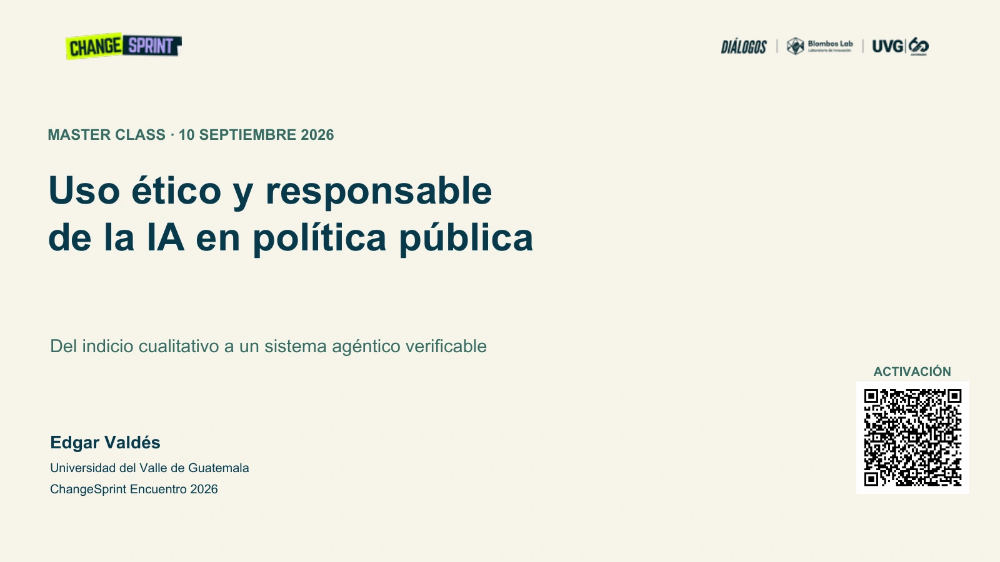

Un camino, tres miradas · 20 ejemplos ficticios · 4 min 21 s
Cargando presentación…
Notas de la lámina y narración
Uso ético y responsable de la IA en política pública
La master class recorre el ciclo de política pública mediante un ejemplo guiado y apoyos agénticos verificables.